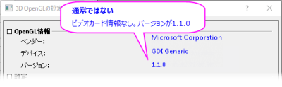

FAQ-443 なぜエクスポートしたグラフや、Word/PowerPointにコピーしたページで、テキストが歪むのでしょうか。
TextDistorted-in-ExpGraph
最終更新日：2022/12/15
Originのグラフをベクター画像にエクスポートしたり、ページをコピーしてWORD、PowerPointなどに貼り付けようとすると、出力のテキストが歪んでいる（縦に傾いている、フォントのクランチ、その他フォント間隔の問題など）問題がある場合、いくつかの理由があります：
- メニューの環境設定：3D OpenGLの設定 ダイアログを開きます。ダイアログからあなたのビデオカード情報を見つけることができます

通常のビデオカード情報
ビデオカードの情報は正常ですが、エクスポートされたグラフでテキストがまだ歪んでいる場合は、以下の理由を確認してください
デフォルトのプリントドライバとの衝突
- この場合、Windowsの「通常使うプリンタ」の設定を変更してからグラフエクスポートを行ってください。
グラフ内で使用しているフォントが、ローカルコンピュータ上にない
- その場合、対応フォントをインストールするか、グラフのフォントを変更してみてください。
オペレーティングシステムの地域と言語の設定が英語ではない
- Windows コントロール パネルで設定を変更できます。
古いバージョンのOfficeにページコピー/貼り付けしている
- 2003などの古いバージョンのOfficeを使用していると、テキストがうまく表示されないといった問題があると報告されています。
- 新しいバージョンのOfficeで試して同じ現象が起きるか確認してください。
通常ではないビデオカード情報
ビデオカードの情報が異常な場合、考えられる原因は：
ビデオカードの問題
- ディスプレイ アダプタに問題がある可能性があります。次のようにして正しく動作することを確認してください。
- - 最新のマザーボードチップセットドライバをインストールする
- - 最新のディスプレイドライバをインストールする
- - ビデオカードを取り外してから拡張スロットに取り付け直したり、補助電源ケーブルを抜き差ししたりするなどの物理的なチェックを行うと、正常に動作するようになります。
リモートデスクトップまたは仮想マシンを使用している
- Origin 9.1 SR3からOriginはシステム変数@EMRDを提供しています。これは、リモートデスクトップまたは仮想マシンを使用している際に、ベクター画像としてエクスポートしたり、OriginからWORDやPowerPointにページコピーしたときにどのようにテキストを描画するかコントロールできます。
- 出力されたグラフのテキストが歪んでいる場合、@EMRD がデフォルト値である2に設定されていることを確認してください。この設定により、出力でテキストオブジェクトが多角形で描画されます。
- 環境設定: システム変数を選択します。
- 以下のようにダイアログにシステム変数EMRDを追加します。
- テキストの歪みはなく、出力のテキストの品質が気になる場合は、@EMRDシステム変数を0に設定します。
明白な理由が見当たらない
- 上述の解決策を試してもうまくいかない場合、EPS、PDFまたはWord内のOLEグラフでテキストエクスポートの問題が引き続き発生する場合は、システム変数@TOを2（または1）に設定してみてください。
- 環境設定: システム変数を選択します。
- 以下のようにダイアログにシステム変数TOを追加します。
Note: システム変数@TO または @EMRDの設定は、結果画像の表示をギザギザにすることがあるので注意してください。エクスポートグラフのテキストがギザギザになるのを防ぐには、以下の方法でグラフを高解像度でエクスポートしてください。
- OriginからWORDにページコピーする場合、オプションダイアログで解像度を600または1200DPIにします。
- ベクター画像(EPS, PDF など)にグラフをエクスポートする場合、グラフエクスポートダイアログで解像度を600または1200DPIにします。
|
キーワード:フォントクランチング, 歪み, フォント間隔, グラフのエクスポート, PDF, EPS, EMF, WORD, PowerPoint